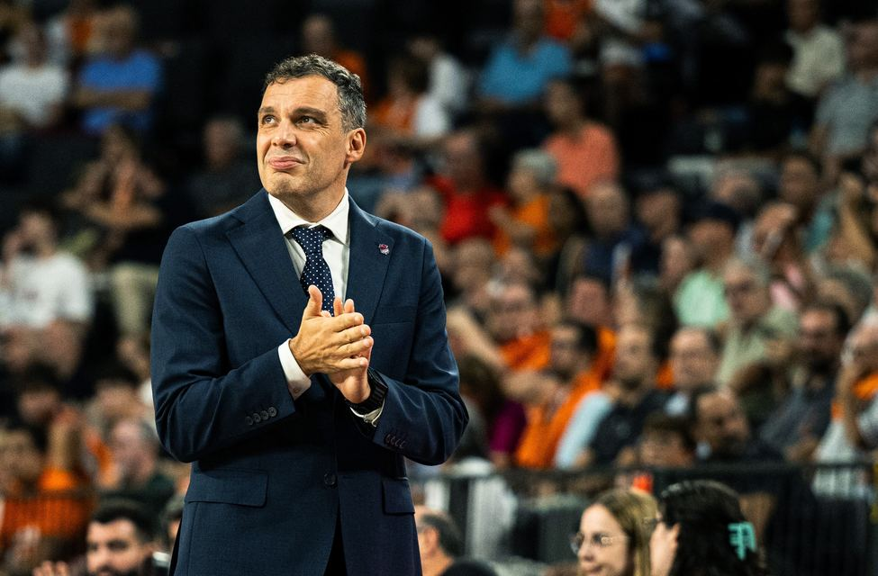

Paolo Galbiati, exentrenador de Baskonia: “Llevo una parte del pueblo vasco dentro de mí”

El técnico italiano, despedido del club de Vitoria en octubre, reflexiona en esta entrevista sobre su paso por el equipo, su carrera y su personalidad
Los pasos que antes guiaban a Paolo Galbiati por Vitoria le llevan ahora por Concorezzo, la localidad de la Lombardía donde el entrenador italiano de 42 años ha vuelto al refugio del hogar después de ser despedido hace un mes en el Baskonia . Galbiati dejó una profunda huella en la afición del Buesa Arena por su personalidad extrovertida, su carácter ganador y su energía contagiosa, y sobre todo por la conquista en Valencia de la última Copa del Rey. Ahora reflexiona sobre su carrera, su estilo y su paso por el equipo baskonista. “Echo de menos a los vascos”, comenta.